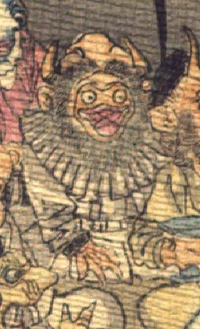

鬼。頭は禿げ、両脇に2本角が生えている。ライオンのたてがみのように、顔の周りをとりまいて髪とひげが生えている。目玉は丸く、鼻はない。口は横にひろがり、唇は厚く、蛙を思わせる。襟飾りのついた白い異国風の衣服を着て、座っている。
著作者：J.Dautremer／出典：親書誌：U426_nichibunken_0123：Le vieillard et les démons／日付：2006／資源識別子：U426_nichibunken_0123_0003_0004
Copyright (c)2010- International Research Center for Japanese Studies, Kyoto, Japan. All rights reserved.